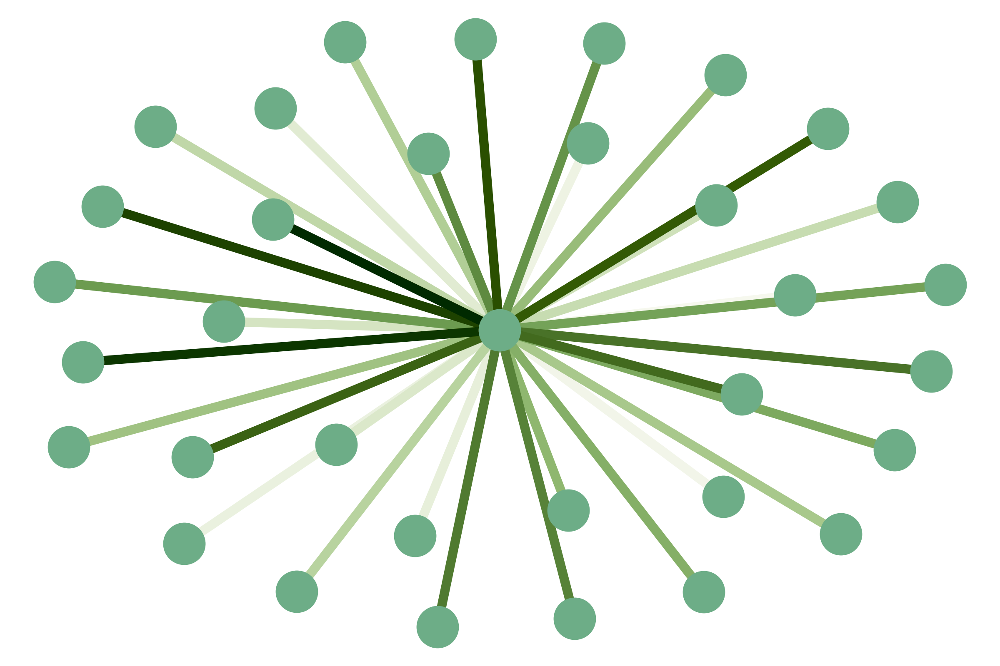
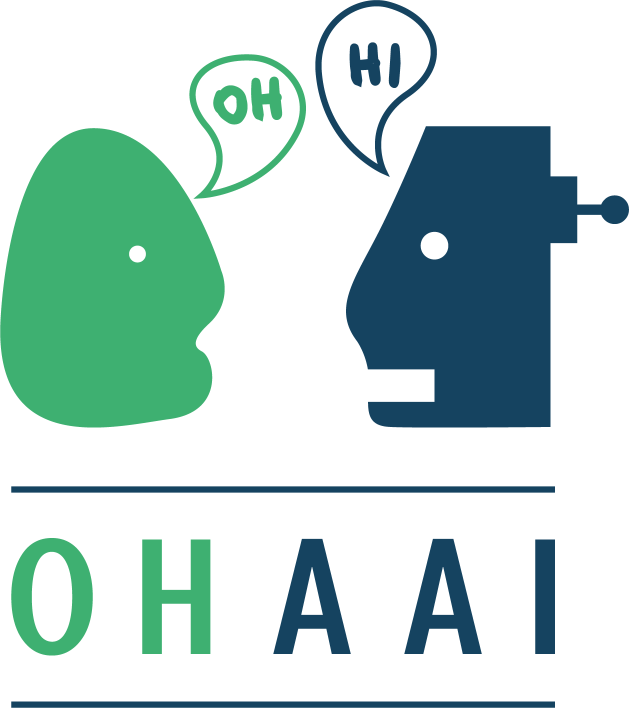

Enhancing deception analysis with storytelling AI
Deception is becoming an increasingly complex socio-cognitive phenomenon that is difficult to detect and reason about. My research tackles the integration of techniques from AI and deception analysis to generate narratives about multi-agent interactions in complex systems in order to help intelligence analysts perform inference to the best explanation. To do this, I have recently been awarded a £200,000 fellowship grant by the Royal Academy of Engineering through the UK IC Postdoctoral Research Fellowship scheme for the project entitled Enhancing deception analysis with storytelling AI. This project is the continuation of his PhD thesis entitled Deception.
Governing Knowledge-Sharing in Hybrid Societies
I am also involved in research projects related to knowledge sharing and privacy in hybrid systems. The first project is the PRAISE project with Jose Such and Natalia Criado at KCL within the UK-wide REPHRAIN Centre. The second is my 3IA Côte d’Azur Project with Fabien Gandon. This project is about designing and testing multi-agent models and protocols to orchestrate the interactions between agents that are powered by different AI technologies. The aim of this project is to ensure optimized collaborations between AI agents that augment, improve, and govern knowledge sharing activities in Multi-Agent Systems. The third project is within the international Hyper-Agents Project where I contribute towards the project's overarching agenda of defining a new class of Multi-Agent Systems that use hypermedia as a general mechanism for uniform interaction. The aim of this general mechanism is to support AI interoperability and traceability in complex interconnected systems.
Deceptive AI
Autonomous agents might develop or be endowed with the ability to deceive. Deceptive machines first appear, more or less, as subtle concepts in Turing's famous Imitation Game. In this game, their role is to trick humans into assigning them the property of intelligence (and perhaps even the property of being phenomenally conscious?). Events that revolve around fake news indicate that humans are more susceptible than ever to mental manipulation by powerful technological tools. My concern is that, given future advancements in AI, these tools may become fully autonomous. This threat made me think that there might be several reasons for which we might consider modelling such agents. Now, the big question that follows from this is "How do we model these artificial agents in a manner such that we increase our understanding of them, instead of increasing the risks they might pose?". With this question in mind, in my PhD thesis , I give the first full computational treatment to deception in AI.
To anyone interested in this topic, I recommend having a look at some of the symposia and workshops on deceptive AI (some of which I have co-organised): the 1st International Workshop on Deceptive AI @ECAI2020 and the 2nd International Workshop on Deceptive AI @IJCAI2021 , the 2015 AAAI Fall Symposium on Deceptive and Counter-Deceptive Machines, and the 2017 Deceptive Machines Workshop @NeurIPS. Don't forget to check out the Deceptive AI Springer book containing the joint proceedings of the two International Workshops on Deceptive AI.
 Socially-Aware AI
Socially-Aware AI
Artificial Theory of Mind enables machines to model and reason about other agents' minds. Some of the scientific literature on this topic shows that this ability could increase the performance of artificial agents, making them more efficient than artificial agents that lack this ability (here is a very nice article about it). However, modelling others agents' minds is a difficult task, given that it involves many factors of uncertainty such as the uncertainty of the communication channel, the uncertainty of reading other agents correctly, and the uncertainty of trust in other agents. I am very fascinated by the promise of social AI and I am highly engaged this research topic, especially in the modelling of how artificial agents can cause changes in the beliefs of other agents through communication.
 Machine Behaviour
Machine Behaviour
Checking how artifical agents behave in the lab or veryfying their reasoning with formal methods is crucial for the safe and ethical advancement of AI. However, neither of these approaches tells us much about how machines would act in the wild. By wild I mean complex hybrid societies where agents (human or artificial) interact. In this article, the authors outline some questions that I believe are becoming more pertinent, namely: "Should the study of AI behaviour and reasoning be strictly limited to Computer Science?". Hence, are there any other methods to study and categorise the behaviour of artificial agents? How should we design these methods and what should they take into consideration about machines? Should we apply the same psychometrics to machines as we do to humans, or do we have to think about them in an entirely new way?
Explainable AI through Argumentation
How do machines to explain and justify their reasoning and decision making? Argumentation in AI is seeing an increased interest due to its potential in shedding light onto issues like Explainable AI. Apart from actively doing research on how machines can generate meaningful arguments during social interactions (mostly dialogues), I have also worked together with my some of my PhD colleagues at King's to co-found the Online Handbook of Argumentation for AI. The purpose of this handbook is to provide an open access and curated anthology for the argumentation research community. OHAAI will act as a research hub to keep track of the latest and upcoming topics and applications of argumentation in AI. The handbook mainly aims to present argumentation research conducted by current PhD students and early-career researchers in all areas where argumentation can be applied to AI. The handbook’s ulterior goal is to encourage collaboration and knowledge discovery between members of the argumentation community. As of 2022, OHAAI has become part of the COMMA conference. Students who submit extended abstracts to OHAAI have the opportunity to present their work at the COMMA Summer School on Argumentation.